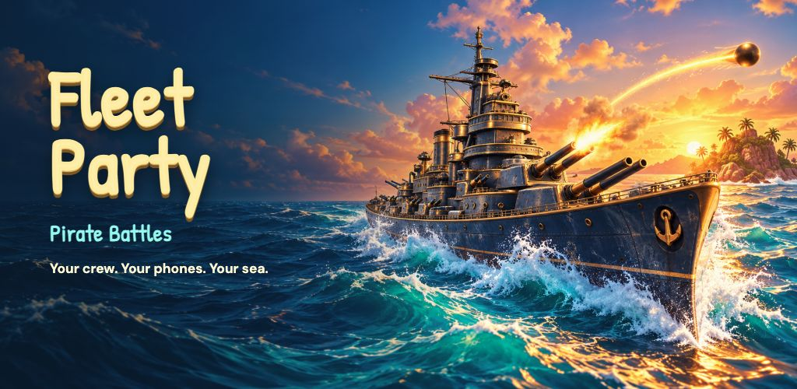

Your crew. Your phones. Your sea.
Gather 2–10 captains around an Android TV. Scan the room QR code, keep your ships secret on your phone and let the sea battle begin.
Start a game night
- Open Fleet Party on Android TV and choose your crew size.
- Connect phones and TV to the same trusted Wi-Fi.
- Scan the QR code, pick a nickname and portrait, and keep or adjust your auto-placed fleet.
- Tap a water square to aim; tap it again to fire. Choose Chaos, Turns or Volley.
No phone app, game account, ads or in-app purchases. Bot captains can fill the party. The Android TV release is being prepared for Google Play.
Privacy policy
Support: admin@autosoftshujaa.com
Published by Autosoft / autosoftshujaa.